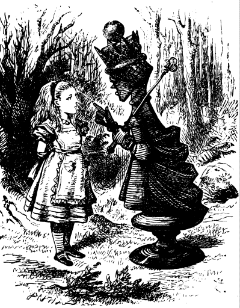
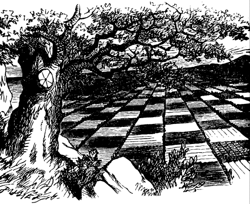
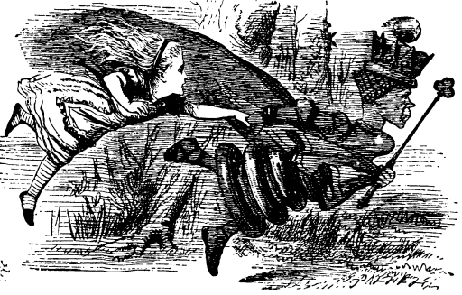
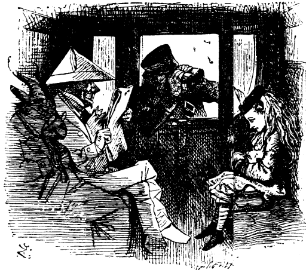
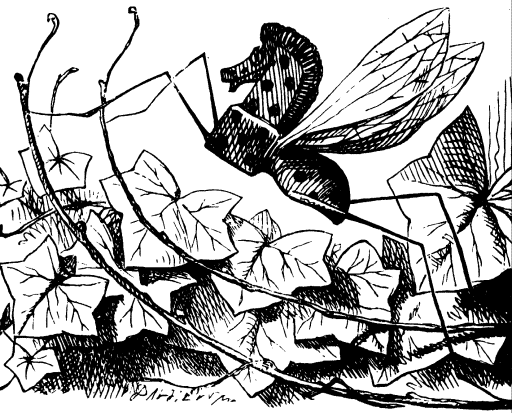

OF course the first thing to do was make a grand survey of the country she was going to travel through. "It's something very like learning geography," thought Alice, as she stood on tiptoe in hopes of being able to see a little further. "Principal rivers--there are none. Principal mountains--I'm on the only one, but I don't think it's got any name. Principal towns--why, what are those creatures, making honey down there? They can't be bees--nobody ever saw bees a mile off you know---" and for some minutes she stood silent, watching one of them that was bustling about among the flowers, poking its proboscis into them, "just as if it was a regular bee," thought Alice.
However, this was anything but a regular bee: in fact, it was an elephant--as Alice soon found out, though the idea quite took her breath away at first. "And what enomous flowers they must be!" was her next idea. "Something like cottages with the roofs taken off, and stalks put to them--and what quantities of honey they must make! I think I'll go down and--no, I won't go just yet," she went on, checking herself just as she was beginning to run down the hill, and trying to find some excuse for turning shy so suddenly. "It'll never do to go down among them without a good long branch to brush them away--and what fun it'll be when they ask me how I liked my walk. I shall say--"Oh, I liked it well enough---" (here came the favourite little toss of the head), "only it was so dusty and hot, and the elephants did tease so!"
"I think I'll go down the other way," she said after a pause: "and perhaps I may visit the elephants later on. Besides, I do so want to get into the Third Square!"
So with this excuse she ran down the hill and jumped over the first six little brooks.
"Tickets, please!" said the Guard, putting his head in at the window. In a moment everybody was holding out a ticket: they were about the same size as the people, and quite seemed to fill the carriage.
"Now then! Show your ticket, child!" the Guard went on, looking angrily at Alice. And a great many voices all said together ("like the chorus of a song," thought Alice), "Don't keep him waiting, child! Why, his time is worth a thousand pounds a minute!"
"I'm afraid I haven't got one," Alice said in a frightened tone: "there wasn't a ticket-office where I came from." And again the chorus of voices went on. "There wasn't room for one where she came from. The land there is worth a thousand pounds an inch!"
"Don't make excuses," said the Guard: "you should have bought one from the engine-driver." And once more the chorus of voices went on with "The man that drives the engine. Why, the smoke alone is worth a thousand pounds a puff!"
Alice thought to herself, "Then there's no use in speaking." The voices didn't join in this time, as she hadn't spoken, but, to her great surprise, they all thought in chorus (I hope you understand what thinking in chorus means--for I must confess that I don't), "Better say nothing at all. Language is worth a thousand pounds a word!"
"I shall dream about a thousand pounds tonight, I know I shall!" thought Alice.
All this time the Guard was looking at her, first through a telescope, then through a microscope, and then through an opera-glass. At last he said, "You're travelling the wrong way," and shut up the window and went away.
"So young a child," said the gentleman sitting opposite to her (he was dressed in white paper), "ought to know which way she's going, even if she doesn't know her own name!"

A Goat, that was sitting next to the gentleman in white, shut his eyes and said in a loud voice, "She ought to know her way to the ticket-office even if she doesn't know her alphabet!"
There was a Beetle sitting next the Goat (it was a very queer set of passengers altogether), and, as the rule seemed to be that they should all speak in turn, he went on with "She'll have to go back from here as luggage!"
Alice couldn't see who was sitting beyond the Beetle, but a hoarse voice spoke next. "'Change engines---" it said, and there it choked and was obliged to leave off.
"It sounds like a horse," Alice thought to herself. And an extremely small voice, close to her ear, said, "You might make a joke on that-- something about 'horse and hoarse', you know."
Then a very gentle voice in the distance said, "She must be labelled "Lass, with care,' you know----"
An after that other voices went on ("What a number of people there are in the carriage!" thought Alice), saying, "She must go by post, as she's got a head on her---" "She must be sent as a message by the telegraph---" "She must draw the train herself the rest of the way---" and so on.
But the gentleman dressed in white paper leaned forwards and whispered in her ear, "Never mind what they all say, my dear, but take a return-ticket every time the train stops."
"Indeed I shan't!" Alice said rather impatiently. "I don't belong to this railway journey at all--I was in a wood just now--and I wish I could get back there!"
"You might make a joke on that," said the little voice close to her ear: "something about'you would, if you could', you know."
"Don't tease so," said Alice, looking about in vain to see where the voice came from; "if you're so anxious to have a joke made, why don't you make one yourself?"
The little voice sighed deeply: it was very unhappy, evidently, and Alice would have said something pitying to comfort it, "if it would only sigh like other people!" she thought. But this was such a wonderfully small sigh, that she wouldn't have heard it at all, if it hadn't come quite close to her ear. The consequence of this was that it tickled her ear very much, and quite took off her thoughts from the unhappiness of the poor little creature.
"I know you are a friend," the little voice went on: "a dear friend and an old friend, And you won't hurt me, though I am an insect."
"What kind of insect?" Alice inquired a little anxiously. What she really wanted to know was, whether it could sting or not, but she thought this wouldn't be quite a civil question to ask.
"What then you don't--" the little voice began, when it was drowned by a shrill scream from the engine, and everybody jumped up in alarm, Alice among the rest.
The Horse, who had put his head out of the window, quietly drew it in and said, "It's only a brook we have to jump over." Everybody seemed satisfied with this, though Alice felt a little nervous at the idea of trains jumping at all. "However, it'll take us into the Fourth Square, that's some comfort!" she said to herself. In another moment she felt the carriage rise straight up into the air, and in her fright, she caught at the thing nearest to her hand, which happened to be the Goat's beard.

But the beard seemed to melt away as she touched it, and she found herself sitting quietly under a tree--while the Gnat (for that was the insect she had been talking to) was balancing itself on a twig just over her head, and fanning her with its wings.
It certainly was a very large Gnat: "about the size of a chicken," Alice thought. Still, she couldn't feel nervous with it, after they had been talking together so long. "--then you don't like all insects?" the Gnat went on, as quietly as if nothing had happened.
"I like them when they can talk," Alice said. "None of them ever talk, where I come from."
"What sort of insects do you rejoice in, where you come from?" the Gnat inquired.
"I don't rejoice in insects at all," Alice explained, "because I'm rather afraid of them--at least the, large kinds. But I can tell you the names of some of them."
"Of course they answer to their names?" the Gnat remarked carelessly.
"I never knew them to do it."
"What's the use of their having names," the Gnat said, "if they won't answer to them?"
"No use to them," said Alice; "but it's useful to the people that name them, I suppose. If not, why do things have names at all?"
"I can't say," said the Gnat. "In the wood down there, they've got no names--however, go on with your list of insects."
"Well, there's the Horse-fly," Alice began, counting off the names on her fingers
"All right," said the Gnat: "half-way up that bush, you'll see a Rocking-horse-fly, if you look. It's made entirely of wood, and gets about by swinging itself from branch to branch."
"What does it live on?" Alice asked, with great curiosity.
"Sap and sawdust," said the Gnat. "Go on with the list."
Alice looked at the Rocking-horse-fly with great " interest, and made up her mind that it must have been just repainted, it looked so bright and sticky; and then she went on.
"And there's the Dragon-fly."
"Look on the branch above your head," said the Gnat, "and there you'll find a Snap-dragon-fly. Its body is made of plum-pudding, its wings of holly-leaves, and its head is a raisin burning in brandy."
"And what does it live on?" Allce asked, as before.
"Frumenty and mince-pie," the Gnat replied; "and it makes its nest in a Christmas-box."

"And then there's the Butterfly," Alice went on, after she had taken a good look at the insect with its head on fire, and had thought to herself, "I wonder if that's the reason insects are so fond of flying into candles--because they want to turn into Snap-dragon-flies!"
"Crawling at your feet," said the Gnat (Alice drew her feet back in some alarm), "you may observe a Bread-and-butter-fly. Its wings are thin slices of bread-and-butter, its body is a crust, and its head is a lump of sugar."
"And what does it live on?"
"Weak tea with cream in it."
A new difficulty came into Alice's head. "S upposing it couldn't find any?" she suggested.
"Then it would die, of course."
"But that must happen very often," Alice remarked thoughtfully.
"It always happens," said the Gnat.
After this, Alice was silent for a minute or two, pondering. The Gnat amused itself meanwhile by humming round and round her head: at last it settled again and remarked, "I suppose you don't want to lose your name?"
"No, indeed," Alice said, a little anxious

"And yet I don't know," the Gnat went on in a careless tone: "only think how convenient it would be if you could manage to go home without it. For instance, if the governess wanted to call you to your lesson, she would call out, "Come here--," and there she would have to leave off, because there wouldn't be any name for her to call and of course you wouldn't have to go, you know."
"That would never do, I'm sure," said Alice: "the governess would never think of excusing me lessons for that. If she couldn't. remember my name, she'd call me 'Miss!' as the servants do."
"Well, if she said "Miss,' and didn't say anything more," the Gnat remarked, "of course you'd miss your lessons. That's a joke. I wish you had made it."
"Why do you wish I had made it?" Alice asked. "It's a very bad one."
But the Gnat only sighed deeply, while two large tears came rolling down its cheeks.
"You shouldn't make jokes," Alice said, "if it makes you so unhappy."
Then came another of those melancholy little sighs, and this time the poor Gnat really seemed to have sighed itself away, for, when Alice looked up, there was nothing whatever to be seen on the twig, and, as she was getting quite chilly with sitting still so long, she got up and walked on.
She very soon came to an open field with a wood on the other side of it: it looked much darker than the last wood, and Alice felt a little timid about going into it. However, on second thoughts, she made up her mind to go on: "for I certainly won't go back," she thought to herself, and this was the only way to the Eighth Square.
"This must be the wood," she said thoughtfully to herself, "where things have no names, I wonder what'll become of my name when I go in? I shouldn't like to lose it at all--because they'd have to give me another, and it would be almost certain to be an ugly one. But then the fun would be, trying to find the creature that had got my old name! That's just like the advertisements, you know, when people lose dogs--"answers to the name of "Dash": had on a brass collar"-- just fancy calling everything you met "Alice, till one of them answered! Only they wouldn't answer at all, if they were wise."
She was rambling on in this way when she reached the wood: it looked very cool and shady. "Well, at any rate it's a great comfort," she said as she stepped under the trees, "after being so hot, to get into the--into the--into what?" she went on, rather surprised at not being able to think of the word. "I mean to get under the--under the--under this, you know!" putting her hand on the trunk of the tree. "What does it call itself? I do believe it's got no name--why, to be sure it hasn't!"

She stood silent for a minute, thinking: then she suddenly began again. "Then it really has happened, after all! And now, who am I? I will remember, if I can! I'm determined to do it!" But being detemined didn't help her much, and all she could say, after a great deal of puzzling, was, "L, I know it begins with L!"
Just then a Fawn came wandering by: it looked at Alice with its large eyes, but didn't seem at all frightened. "Here then! Here then!" Alice said, as she held out her hand and tried to stroke it: but it only started back a little, and then stood looking at her again.
"What do you call yourself?" the Fawn said at last. Such a soft sweet voice it had!
"I wish I knew!" thought poor Alice. She answered, rather sadly, "Nothing, just now."
"Think again," it said: "thatwo'n't do."
Alice thought, but nothing came of it. "Please, would you tell me what you call yourself?" she said timidly. "I think that might help a little."
"I'll tell you, if you'll come a little further on," the Fawn said. "I can't remember here."
So they walked on together through the wood, Alice with her arms clasped lovingly round the soft neck of the Fawn, till they came out into another open field, and here the Fawn gave a sudden bound into the air, and shook itself free from Alice's arms. "And, dear me, you're a human child!" A sudden look of alarm came into its beautiful brown eyes and in another moment it had darted away at full speed.
Alice stood looking after it, almost ready to cry with vexation at having lost her dear little fellowtraveller so suddenly- "However, I know my name now," she said: "that's some comfort. Alice--Alice--I won't forget it again. And now, which of these finger-posts ought I to follow, I wonder?"
It was not a difficult question to answer, as there was only one road, and the finger-posts both pointed along it. "I'll settle it," Alice said to herself, "when the road divides and they point different ways.
But this did not seem likely to happen. She went on and on, a long way, but wherever the road divided there were sure to be two finger-posts pointing the same way, one marked "TO TWEEDLEDUM'S HOUSE," and the other "TO THE HOUSE OF TWEEDLEDEE."
"I do believe," said Alice at last, "that they live in the same house! I wonder I never thought of that before--but I can't stay there long. I'll just call and say "How d'ye do?' and ask them the way out of the wood. If I could only get to the Eighth square before it gets dark!" So she wandered on, talking to herself as she went, till, on turning a sharp corner, she came upon two fat little men, so suddenly that she could not help starting back, but in another moment she recovered herself, feeling sure that they must be---